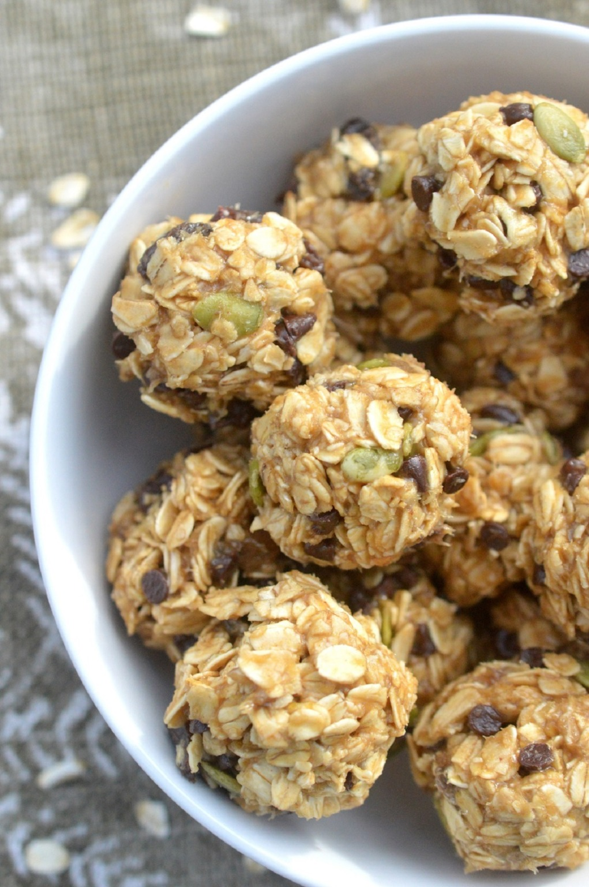
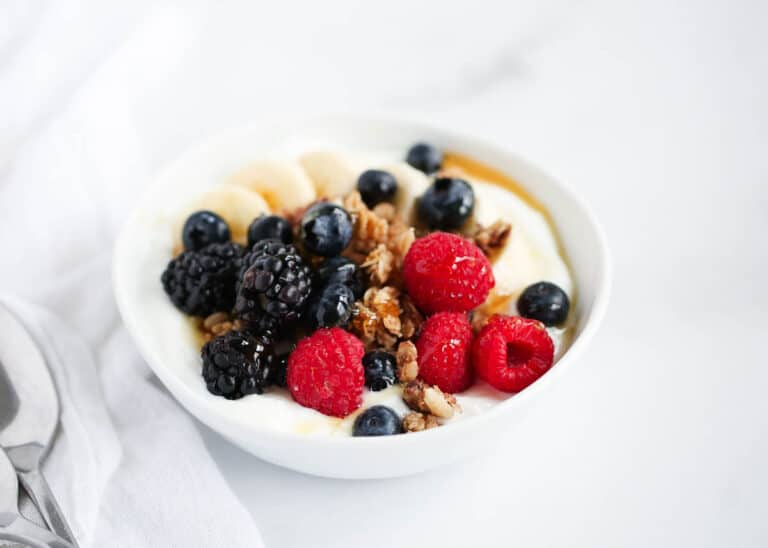
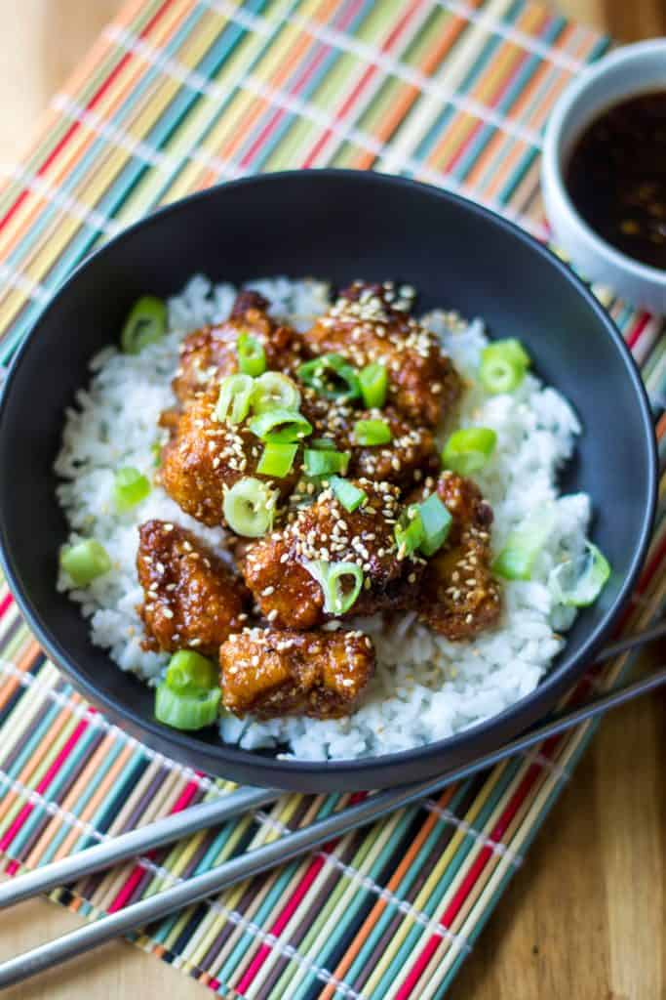
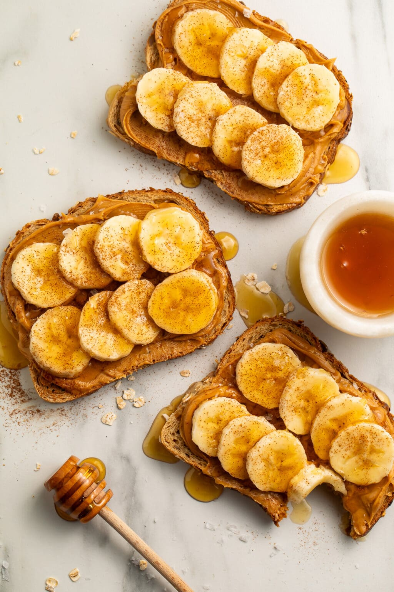
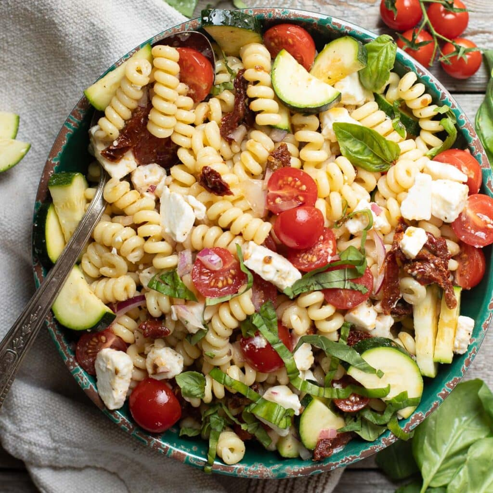
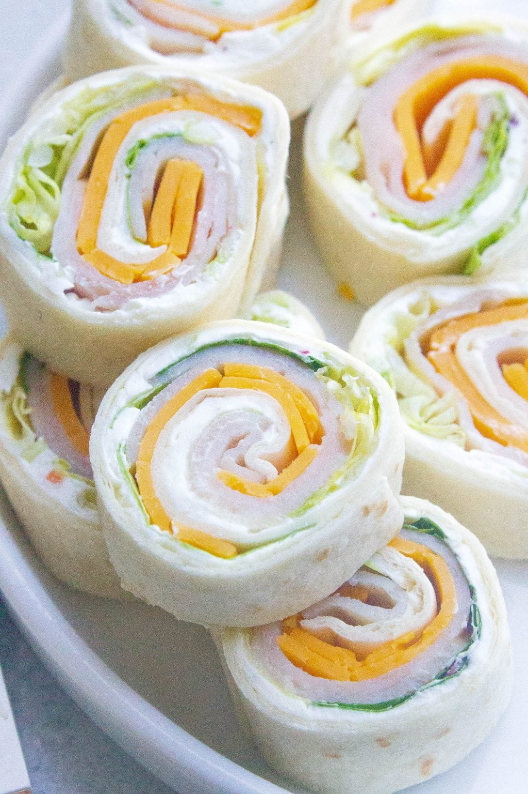

----------------------------------------------------------------
Click to find the recipe you want!
----------------------------------------------------------------
10 Simple Healthy Recipes
1. Easy Veggie Wrap

A quick, healthy lunch you can make in under 5 minutes.
- 1 whole wheat tortilla
- Handful of spinach
- Sliced cucumbers
- Shredded carrots
- Hummus
Directions: Spread hummus on the tortilla, add veggies, roll up, and enjoy.
2. Banana Oat Energy Bites
Perfect for breakfast or a quick snack on the go.
- 1 banana (mashed)
- 1 cup oats
- 1 spoon of peanut butter
- Chocolate chips (optional)
Directions: Mix everything together, roll into balls, and chill for 20 minutes.
3. Fresh Fruit Yogurt Bowl
A quick breakfast full of protein and vitamins.
- 1 cup low-fat yogurt
- Fresh berries
- Granola
- Honey (optional)
Directions: Add yogurt to a bowl, top with berries and granola, drizzle with honey.
4. Chicken & Rice Bowl
A simple balanced meal you can make with leftovers.
- 1 cup cooked rice
- Cooked chicken
- Steamed veggies
- Soy sauce or teriyaki sauce
Directions: Layer rice, chicken, and veggies in a bowl. Add a little sauce and serve.
5. Peanut Butter Banana Toast
A fast, filling snack or breakfast.
- 1 slice whole grain bread
- Peanut butter
- Banana slices
- Cinnamon
Directions: Toast bread, spread peanut butter, add banana slices, and sprinkle cinnamon.
6. Easy Smoothie

A refreshing drink packed with nutrients.
- 1 banana
- ½ cup frozen fruit
- ½ cup milk or juice
- Handful of spinach (optional)
Directions: Blend everything until smooth.
7. Simple Pasta Salad
A great meal prep option for lunch.
- Cooked pasta
- Cherry tomatoes
- Cucumbers
- Olive oil + Italian seasoning
Directions: Toss pasta with veggies, add olive oil, season to taste.
8. Avocado Egg Toast

High-protein and super easy to make.
- 1 slice toast
- ½ avocado (mashed)
- 1 egg (fried or scrambled)
- Salt and pepper
Directions: Spread avocado on toast, add the egg, and sprinkle salt and pepper.
9. Apple Nachos

A quick, healthy dessert-style snack.
- 1 apple (sliced)
- Peanut butter (melted slightly)
- Granola
- Mini chocolate chips (optional)
Directions: Lay apple slices on a plate, drizzle with peanut butter, sprinkle granola and chocolate chips.
10. Quick Turkey & Cheese Roll-Ups
A fast, protein-packed snack you can make anytime.
- 2 slices turkey
- 1 slice cheese
- Lettuce leaves
- Mustard (optional)
Directions: Lay turkey flat, add cheese and lettuce, roll up tightly, and slice into small bites.